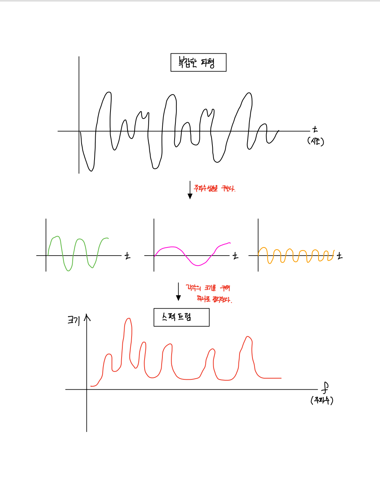
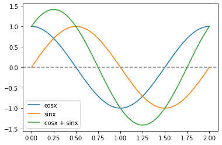
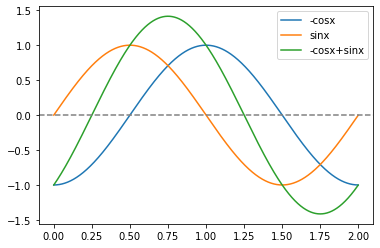
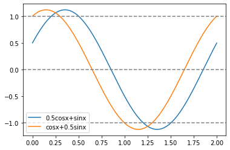
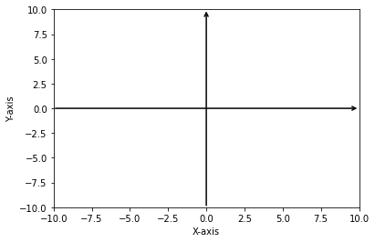

Chap1. 인트로
전파나 음파는 모두 시간과 함께 변화하는 [파형] 이라고 할 수 있다. 보통 자연계에 존재하는 파형은 단순한 파형이 아니라 복잡한 파형으로 나타나고 있다.
여기서 복잡하다는 것은 몇 개의 단순한 파형들이 합성돼서 만들어진다고 생각하면 된다. 단순한 파형들의 합성으로 복잡한 파형이 만들어진다는 개념이 [푸리에 변환] 의 기저를 이루고 있는 것.
달리 말하면, 단순한 파형들의 합성이 어떤 주파수나 세기로 성립되어 있는지를 수학적으로 구하는 방법이 [푸리에 변환].
푸리에 변환을 실행하려면, 원칙적으로는 파형이 일정 주기를 가져야한다. 그래서 복잡한 파형을 짧은 부분들로 나눠서 그 구간에서 파형이 반복된다고 가정하는 것이다.

Chap6. 푸리에 변환의 이해를 위한 준비
1. 삼각함수의 합으로 파형 만들기
직교하는 함수의 합을 이용해서 다양한 파형을 만들어보자.
- \(y=a\cos x + b\sin x\)
같은 주기를 가지는 \(\sin mx\)와 \(\cos mx\)을 더하는 것으로 시작해보자. (\(m=1\))
- \(a=1, b=1\)
time = np.arange(0,2,0.001)
cos1 = cos_wave(1,1,time)
sin1 = sin_wave(1,1,time)
plt.plot(time, cos1, label='cosx')
plt.plot(time, sin1, label='sinx')
plt.plot(time, cos1+sin1, label='cosx + sinx')
plt.axhline(y=0, color='grey', linestyle='--')
plt.legend()<matplotlib.legend.Legend at 0x7fe65f0982e0>
- 모양은 별로 안변함..
- 진폭이 커진다.
- \(a=1, b=-1\)
time = np.arange(0,2,0.001)
cos1 = cos_wave(-1,1,time)
sin1 = sin_wave(1,1, time)
plt.plot(time, cos1, label='-cosx')
plt.plot(time, sin1, label='sinx')
plt.plot(time, sin1+cos1, label='-cosx+sinx')
plt.axhline(y=0, color='grey', linestyle='--')
plt.legend()<matplotlib.legend.Legend at 0x7fe65f2180a0>
- 덧셈의 값은 진폭이 합성된 크기가 된다.
- 위상1이 변한다.
2. \(a\cos x\)와 \(b\sin x\)의 합성
함수들을 그대로의 형태로 다루는 것이 아니라 어떤 [직교하는 함수의 조합] 으로 다룬다고 생각해야 한다. 실제로는 \(\sin x\)와 \(\cos x\)라는 단 2개의 함수로 다양한 위상의 \(\sin(x+\theta)\)를 만들 수 있다.
time = np.arange(0,2,0.001)
cos1 = cos_wave(1/2,1,time)
sin1 = sin_wave(1,1, time)
cos2 = cos_wave(1,1,time)
sin2 = sin_wave(1/2,1,time)
plt.plot(time, sin1+cos1, label='0.5cosx+sinx')
plt.plot(time, cos2+sin2, label='cosx+0.5sinx')
plt.axhline(y=0, color='grey', linestyle='--')
plt.axhline(y=1, color='grey', linestyle='--')
plt.axhline(y=-1, color='grey', linestyle='--')
plt.legend()<matplotlib.legend.Legend at 0x7fe65eda0430>
- \(\sin\)과 \(\cos\) 만으로 나타낼 수 있다는 것은 이 \(2\)개가 [직교]라는 성질을 가지고 있다는 것과 같다.
- [직교하고 있다] = [다른 방법을 통해서는 나타낼 수 없다.] 라는 성질도 가지고 있음.
- 다른 방법을 통해서는 나타낼수 없다??
아래와 같은 \(x\)축과 \(y\)축이 교차된 직각으로 교차된 그래프를 생각해보자.
plt.xlim(-10, 10)
plt.ylim(-10, 10)
plt.annotate("", xy=(10, 0), xytext=(-10, 0), arrowprops=dict(arrowstyle="->", linewidth=1.5, color='black'))
plt.annotate("", xy=(0, 10), xytext=(0, -10), arrowprops=dict(arrowstyle="->", linewidth=1.5, color='black'))
plt.xlabel('X-axis')
plt.ylabel('Y-axis')
plt.show()
이 그래프도 관점만 바꾸면 \(y=0\)이란 상수식이 \(x\)축을 나타내고, \(x=0\)이라는 상수식이 \(y\)축을 나타낸다고도 할 수 있다. 즉, \(x\)축과 \(y\)축의 기본 그래프는 상수식 \(x=0\)과 \(y=0\)의 그래프가 직교하는 그래프라는 것이다.
\(x\)축은 \(y\)축을 아무리 정수배해도 나타낼 수 없다. \(0\)은 몇 배를 해도 \(0\) 밖에 되지 않으니까!
\(x\)축 위의 적당한 값은 \(x=0\) (\(y\)축)을 몇배해도 만들 수 없다. \(y\)축도 마찬가지이다. 이것은 곧 [직교한다] 라는 말이 [다른 방법으로는 나타낼 수 없다] 라는 뜻.
- 이것을 \(\sin, \cos\)함수에 적용시켜보자.
위와 동일한 논리로 \(\cos x\)라는 함수는 \(b\sin x\)의 \(b\)를 아무리 변화시켜도 만들어 낼 수 없다.
마찬가지로 \(\sin x\)는 \(a\cos x\)의 \(a\)를 아무리 변화시켜도 만들어 낼 수 없다.
\(\sin 3x\)도 \(\sin x\)로부터는 만들어 낼 수 없다. 왜냐? 이것은 \(\sin x\)와 \(\sin 3x\)가 직교하고 있기 때문!
\(x\)축과 \(y\)축의 경우, 직교하는 것이 단 둘뿐이었지만 \(\sin x\)나 \(\sin 2x\)나 \(\sin 3x\) 등등은 모두 서로에게 직교하는 함수인 것.
\(\cos x\)와 \(\cos 2x, \cos 3, \dots\)와 \(\cos\)도 주기가 다른 것들끼리는 서로 직교하고 있다.
\(\cos nx\)와 \(\cos nx\)는 주기가 같아도 직교하고 있다.
이렇게 서로 직교하는 함수를 조합함으로써 다양한 형태의 함수를 만들어 낼 수 있다. 다른 삼각함수로는 만들어 낼 수 없는, 서로 직교하는 각각의 삼각함수는 다양한 파형을 만들어 내는 기준단위로서 존재 의의가 있는 것이다.
- 합성된 파형은 진폭이 바뀐다.
다시 처음으로 돌아가서 \(\sin x\)와 \(\cos x\)의 크기(\(a\)와 \(b\))에 따라 합성된 파형은 진폭도 바뀌게 된다.
이것은 \(\sin x\)와 \(\cos x\)의 합성을 원주 위를 회전하는 벡터로 바꿔서 생각하면 이해하기 쉽다.
피타고라스 정리를 적용시켜보면
\(a^2+b^2=r^2\) 이므로 \(r=\sqrt{a^2+b^2},\quad (r>0)\)
합성된 \((a+b)\)라는 벡터를 반지름이 \(r\)인 원에 대입해보면,
\(a^2+b^2=r^2\) 이라는 관계가 있다는 것을 알 수 있음. 이 식을 \(r\)에 대해서 정리하면
\(r=\sqrt{a^2+b^2}\) 이 된다.
결국 \(a\cos x + b\sin x\)의 크기가 \(\sqrt{a^2+b^2}\) 이 된다는 말.
- 예제 : \(a=2, b=2\)의 파형의 크기는?
\(2\cos x+2\sin x\)의 파형의 크기(진폭)는
\(\therefore r=\sqrt{2^2+2^2}=\sqrt{8}=2.82842712\dots\)
이처럼 \(a\)와 \(b\)를 적당하게 조합하면 주기는 바꿀 수 없지만 진폭과 위상은 자유자재로 바꿀 수 있다.
즉, 주기는 같아도 여러가지 형태의 파형을 만들 수 있다.
4. 푸리에 급수
- 푸리에 급수
\(\sin\) 이나 \(\cos\)을 개수와 상관없이 여러 개를 더하면 더 복잡한 함수를 만들어 낼 수 있다.
\(\begin{align*}F(x) &= \frac{1}{2}a_0 + a_1\cos x + a_2\cos 2x + a_3\cos 3x + \dots + a_n\cos nx + \dots \\ &+b_1\sin x + b_2\sin 2x + b_3 \sin 3x + \dots b_n\sin nx+ \dots \\ &= \frac{1}{2}a_0 + \sum_{n=1}^\infty (a_n\cos nx + b_n \sin nx)\end{align*}\)
- \(\frac{1}{2}a_0\) : 삼각함수에 의해 함성된 파형 전체를 상하로 이동시킬 수 있도록 하기 위해 있는 것이라 생각하자.
- [푸리에 급수 전개]는 함수 \(F(x)\)가 어떤 주기를 가지고 있을 때, 즉 [주기함수]일 때 합성에 이용되는 것이 전제되어 있어햐 한다.2
- \(a_1,a_2,a_3,\dots, b_1,b_2,\dots\)은 푸리에 계수
- 푸리에 계수 값을 알면 \(F(x)\)의 파형의 형태를 결정할 수 있다.
- \(\cos nx\) 나 \(\sin nx\)의 앞에 붙는 \(n\) \(\to\) 주파수
- \(\sin, \cos\)의 크기를 결정하는 계수 \(a_n, b_n\) \(\to\) 푸리에 계수
삼각함수의 주기와 푸리에 계수를 조합하면 다양한 파형을 만들어 낼 수 있다. 이 공식이 푸리에 급수..
- 여러 개의 함수를 조합해서 만들어 내는 것이 “합성”
- 한 함수가 어떤 조합으로 이루어졌는지를 알아보는 것이 “변환”
- 합성과 변환은 서로 역의 관계
푸리에 급수를 역으로 하면 푸리에 변환을 이용하여 파형을 해석하는 푸리에 해석이 가능하다.
원래의 파형 \(F(x)\)에서 푸리에 계수에 등장한 \(a_0, a_n, b_n\)을 구하는 일을 푸리에 계수를 구한다 라고 한다.
Chap 7. 푸리에 해석
- 푸리에 계수
\(a_n = \frac{1}{\pi}\int_{0}^{2\pi} F(x) \cos nx dx\)
\(b_n = \frac{1}{\pi}\int_0^{2\pi}F(x)\sin nx dx\)
\(a_0 = \frac{1}{2\pi}\int_0^{2\pi}F(x)dx\)
하나의 주파 성분에는 \(\sin\)함수의 성분과 \(\cos\)함수의 성분이 들어있고, 그것들에 대응하는 푸리에 계수는 \(b_n\)과 \(a_n\)으로 표시하고 있다. 그러나 스펙트럼에는 각각의 성분의 계수가 아닌 그 주파수의 크기에 주목해야한다.
4번째 단계에서 계산된 \(r_n\)을 \(n\)이 작은 순서부터 오른쪽으로 일렬로 늘어놓아 그래프로 그린 것이 스펙트럼 이다.
푸리에 변환으로 주파수 분석을 할 경우엔 변수를 시간함수로 생각하기 때문에 변수를 \(t\)로 바꿔서 \(F(t)\)로 쓰기도 한다. 이렇게 하면 함수의 변수가 시간인 것을 강하게 나타내주기 때문.
정현파…..
- 세미, 넌, 파라메트릭….이 뭔지???
To read
- 에일리어싱: https://moonnote.tistory.com/133
- 나이퀴스트 이론: https://ralasun.github.io/signal%20analysis/2021/07/01/nyq/
- kernel : https://sonsnotation.blogspot.com/2020/11/11-1-kernel.html
푸리에 급수와 주파수 분석에서의 활용
Fourier series는 다음 두 식으로 구성된다.
(1) \(x(t) = \sum_{k=-\infty}^\infty a_k \exp(j\frac{2\pi k}{T}t)\)
(2) \(a_k = \frac{1}{T}\int_{0}^T x(t) \exp(-j\frac{2\pi k}{T}t)dt\)
1번식: 연속신호(함수)는 무한차원의 벡터이고, 이것은 기저벡터의 선형결합으로 재구성할 수 있음.
2번식: 위 신호를 구성하는 각 기저벡터는 얼마만큼의 기여도를 갖고 있는지? \(\to\) 주파수 분석에 활용 가능